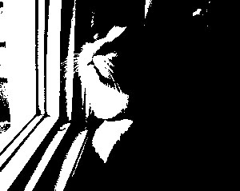
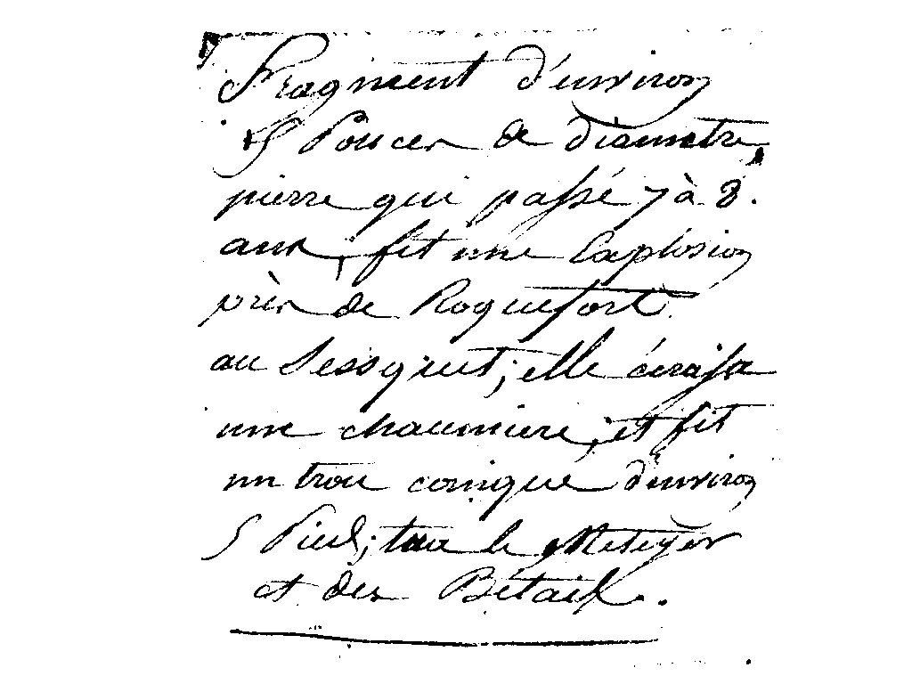
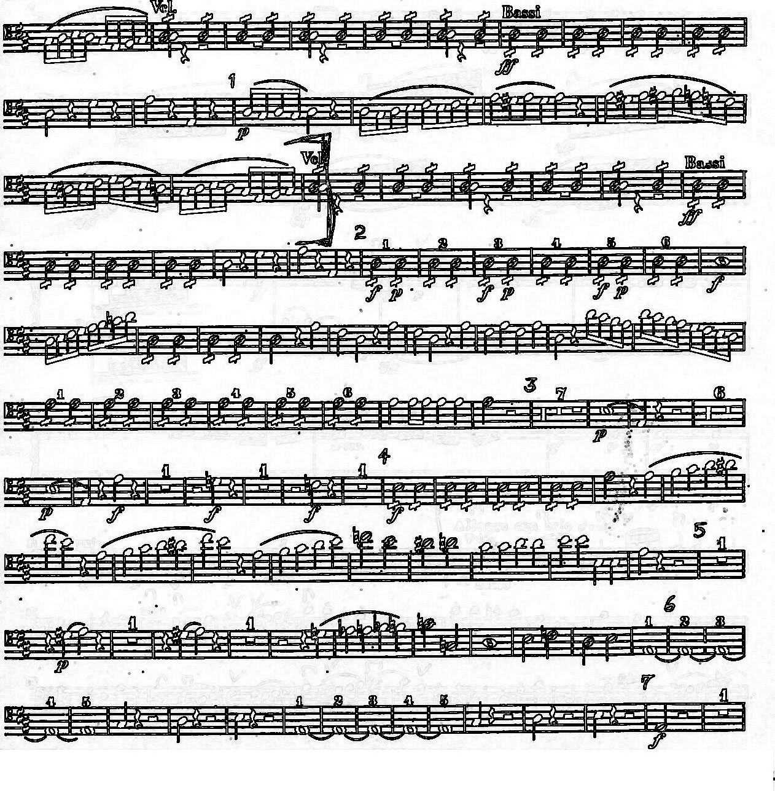
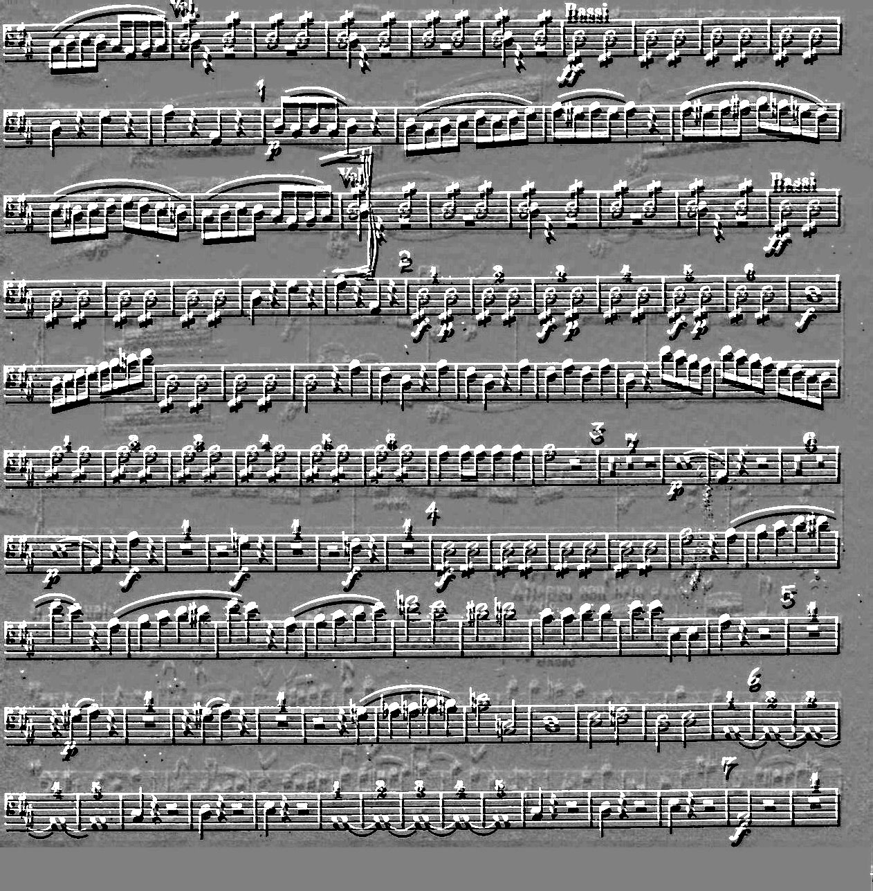

1a. 
Threshold value: 165 I used threshhold value 165 because I wanted to preserve the cat's figure as well as the windowsill to keep what the original picture is. Numbers around this area work well with what I wanted to do which was keep the wiskers recognizable to dictate this was a cat near the windowsill. If we use numbers in the lower ends of the thresholds, the window disapears but if we use numbers in the higher ends, the cat disapears or we cannot tell if the shown figure is a cat.
1b.

Threshold value: 1 Used this since this is the only value which presents the gif to display "Now you can see the text hidden in this image"
2. 
Threshold value: 115 I used this value to keep most of the text a solid colour and with less fade to the text. There is no "best" value for this since there are a big range of values which can be used to completely remove the background scribbles but have more fade in the text or the opposite.
3a.
3b.
3c.
4. 
After enhancing the image, I could see a lot of faint measures in the background above and behind some of the note measures. It looks like one sheet of music has been under our visible sheet the whole time, but very faintly.
To verify my observations, I have gotten a embossing from the image, we can really see in this case, there is a seperate set of notes directly under what we are looking at.
